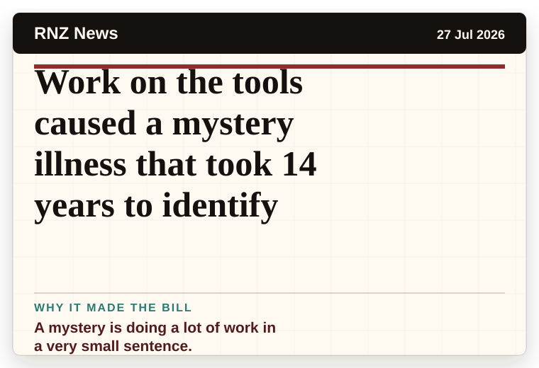
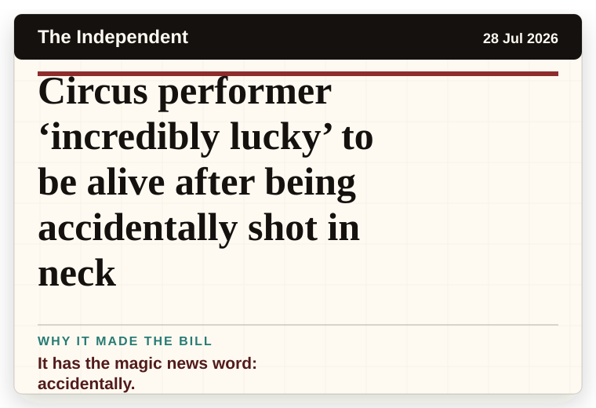
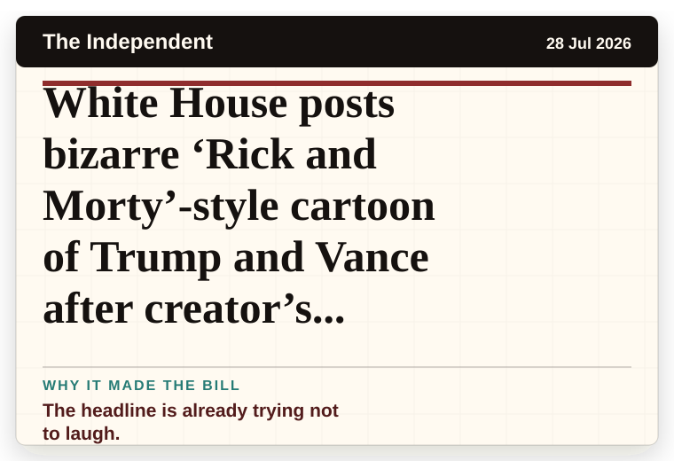
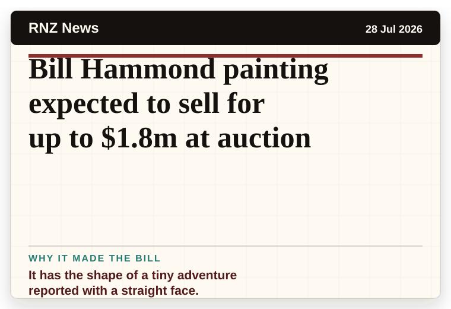
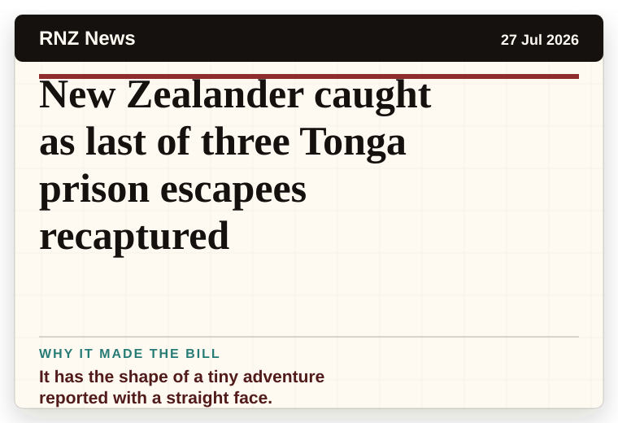
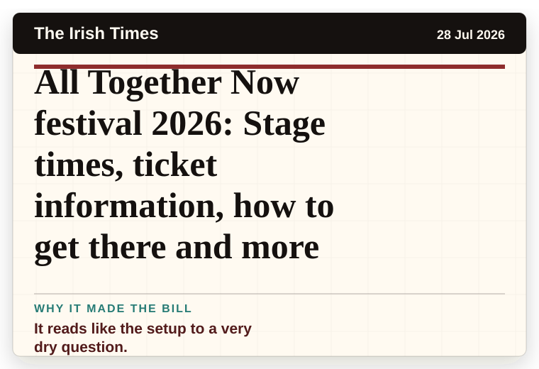

NT News
Australia
How this Brisbane cheese shop owner is taking on the supermarket giants
A very ordinary object has wandered into serious news.
The latest daily picks, linked back to the original sources. Search the room, pick a source, or follow a headline out to the full story.
Record updated: 28 Jul 2026, 07:53 AM AEST
Showing 11 headline candidates from the refresh run completed on 28 Jul 2026, 07:53 AM AEST.
A very ordinary object has wandered into serious news.

A mystery is doing a lot of work in a very small sentence.

It has the shape of a tiny adventure reported with a straight face.

A wonderfully specific detail has taken centre stage.

A wonderfully specific detail has taken centre stage.

A mystery is doing a lot of work in a very small sentence.

It has the magic news word: accidentally.

The headline is already trying not to laugh.

It has the shape of a tiny adventure reported with a straight face.

It has the shape of a tiny adventure reported with a straight face.

It reads like the setup to a very dry question.